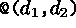
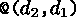

Xy-pic User's Guide 


@/curving/. The
simplest styles of curving are the following, shown applied
to an arrow from A to B:
As the last example shows a dimension can be inserted just after ^
or _ if more or less curving is desired.
In case it is easier to specify the in- and out-going directions of the curving then that is also possible: use
@(in,out)
|
where in and out are one of the following directions:
In this case the curving is computed such that the curve begins at the base entry in the in direction and ends at the target entry from the out direction (this means that  and  are mirror images. See section 2.6 for more directions).
Xy-pic User's Guide